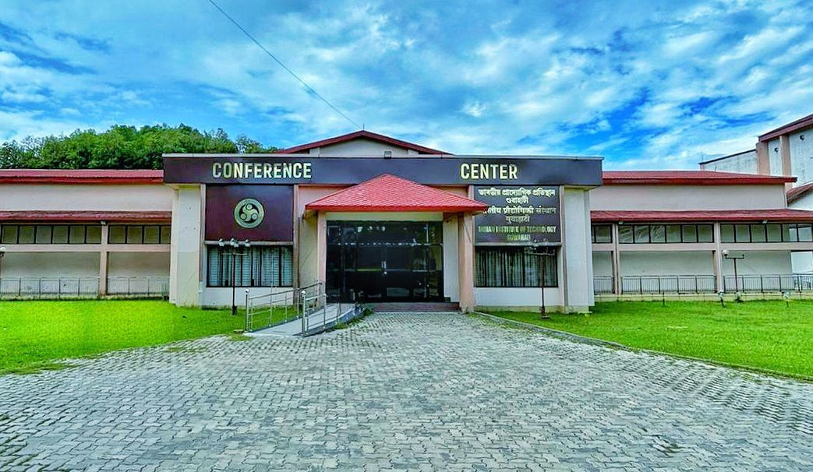

Conference Venue

Conference Center, IIT Guwahati
Indian Institute of Technology Guwahati, Amingaon, North Guwahati, Assam 781039
Indian Institute of Technology Guwahati, Amingaon, North Guwahati, Assam 781039